12¢Murals
GEO·TOWNARMENIAN ST
Must-Do
Children on a Bicycle
Greetings from…
The whole UNESCO core is the headline sight: 500 years of Malay-Chinese-Indian-European trade, walkable and mostly free. Come for the street art, the gilded clan houses, the stilt jetties, the hill funicular and Malaysia's biggest temple.
Time it for December–February — driest skies, but peak season, so book the flights and heritage hotels weeks ahead.[33][34]
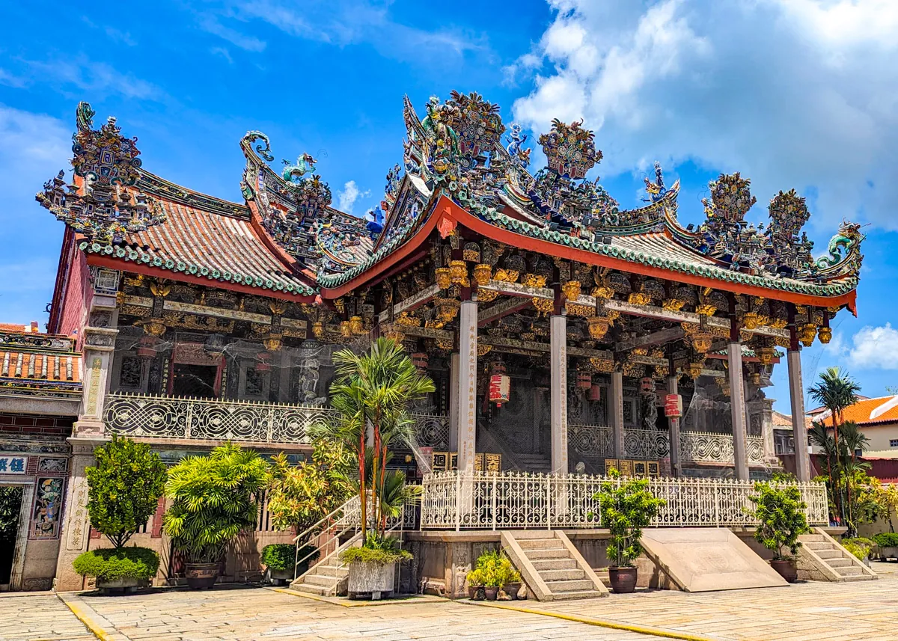
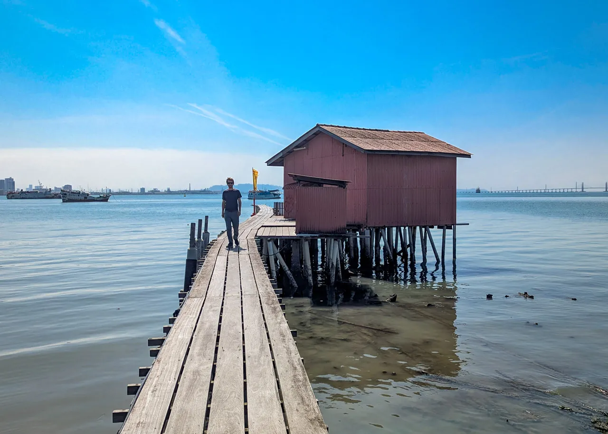
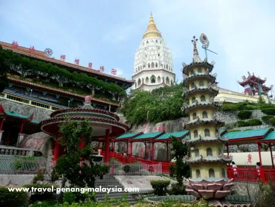
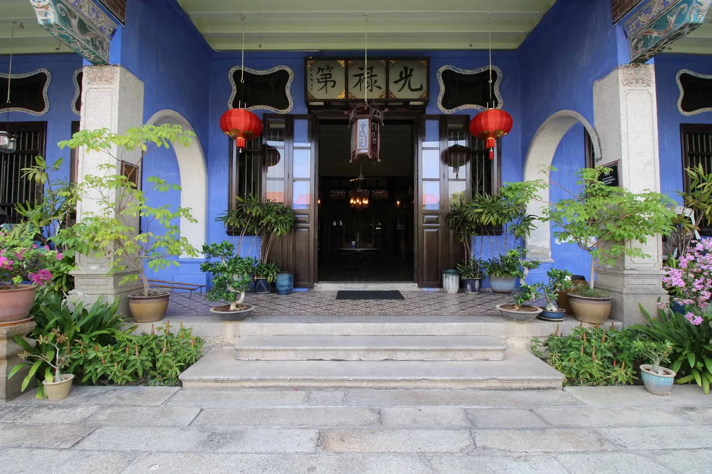
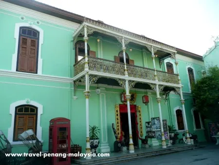
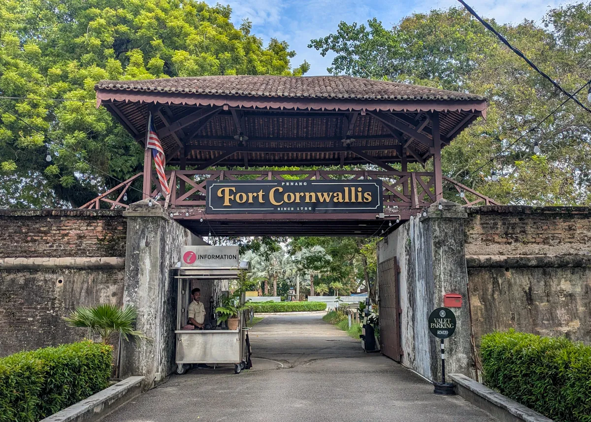
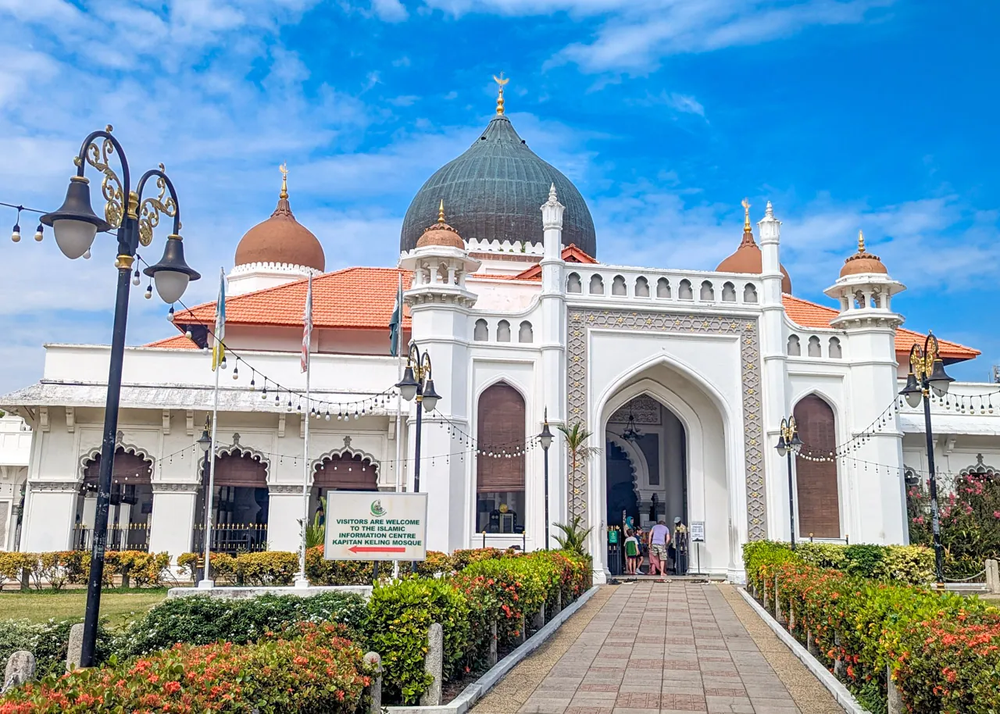
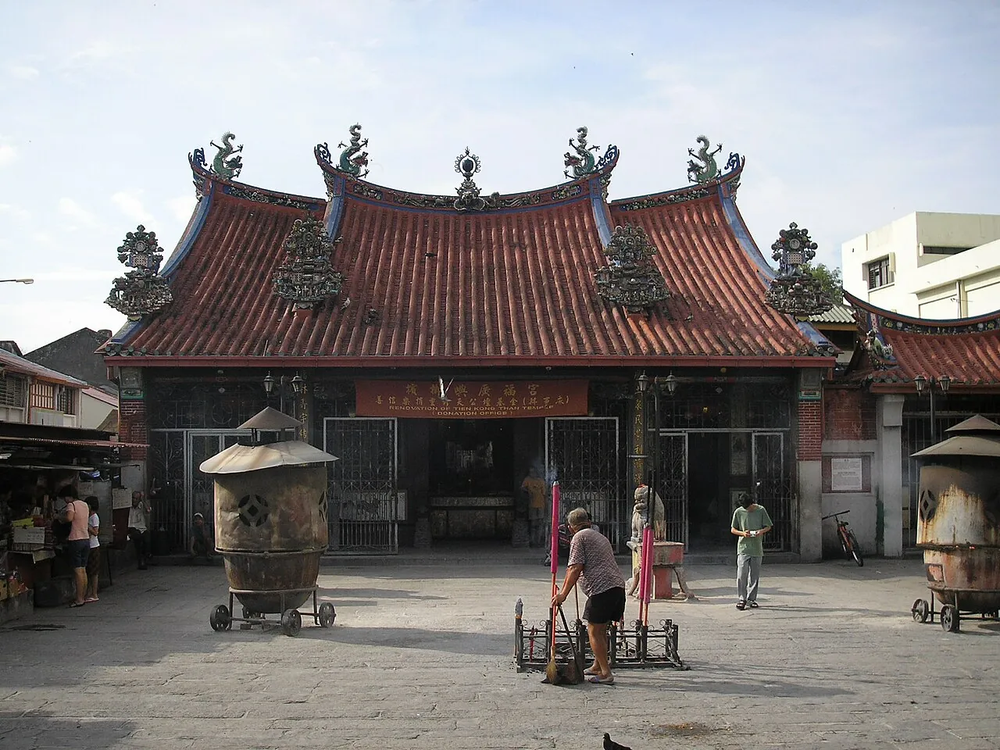
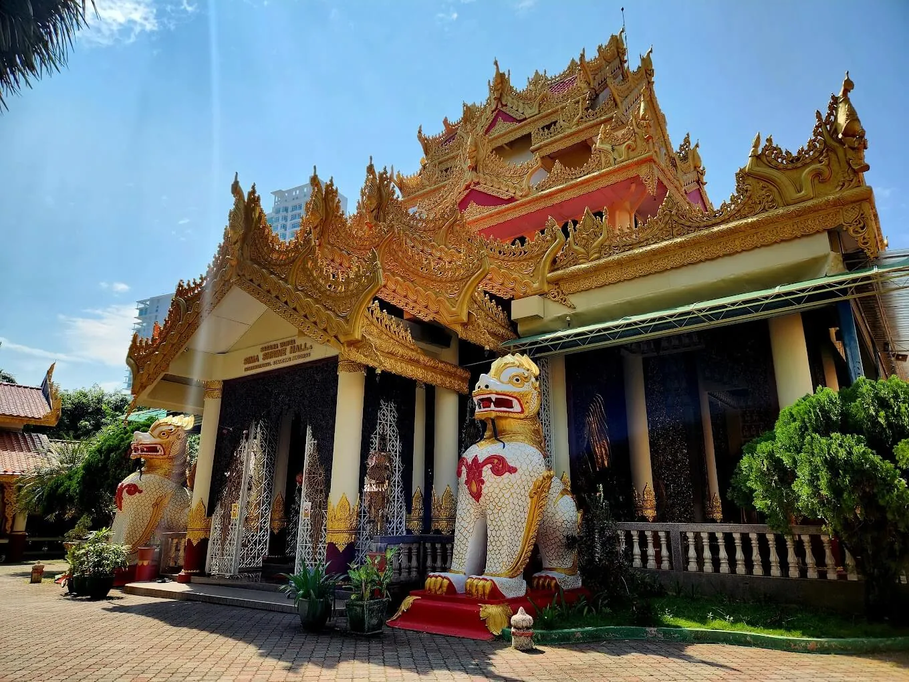
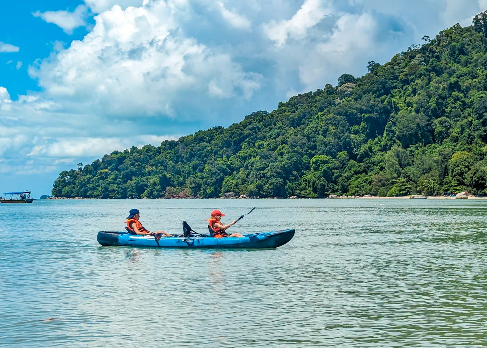
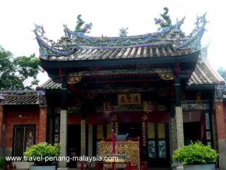